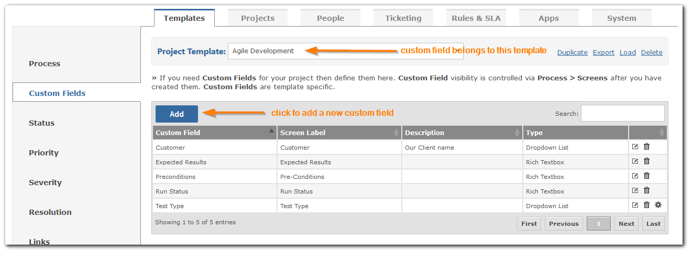

Managing Custom Fields
There are a large number of standard fields to support most uses but occasionally you need a field that is unique to your needs and is not in the delivered list. Your Custom fields will be treated as if they come out-of-the-box and you can sort, find and filter on them.
